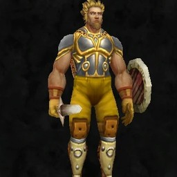

Transmogrification · WoW: Forever
Deno Wardrobe
A wardrobe for WoW: Forever on its own tab of the character screen. Browse thousands of looks with your own character in every preview, try them on a turnable model, filter by armour or weapon type, and save named outfits to equip or send to the transmogrifier. Looks come live from AtlasLoot Forever, Forever Dungeon Journal and Questie when installed, plus the world and what you find.
What it does
A wardrobe tab on the character screen
Pick a slot, then an armour type (Cloth, Leather, Mail, Plate) or, for Main Hand and Off Hand, a weapon type (1H/2H Sword, Axe, Mace, Dagger, Shield, Bow and more). Search every slot by name or by where an item comes from.
Your own character in every preview
Each tile shows the look on you; the large model on the right is turnable (drag), zoomable (wheel) and can be moved (right-drag).
Try on, then save
Pieces go on over your own gear, or on a bare model after Undress. The strip under the model shows what is on it; a button takes a piece off. Save named outfits, Equip the pieces you own, or send a whole outfit to the transmogrifier.
Collected and owned marks
From the game's own appearance collection.
Previews without waiting for the server
The look of every item comes from the game's own item tables, so tiles are dressed straight away, also right after a login. Item names and quality are remembered between sessions.
Junk left out
Placeholder, deprecated and test items and anything above level 60.
Pictures


Install
- Download the zip from the latest release, or install it from CurseForge.
- Extract the
DenoWardrobefolder intoWorld of Warcraft\<Forever folder>\Interface\AddOns\. - Restart the game.